Data Platforms and Artificial Intelligence
Challenges and Applications
Big data vs small data
- The progressive digitalization of services and systems generates an enormous mass of heterogeneous and real-time data
- Big Data must be transformed into Small Data so that it can be exploited for decision-making purposes
- Small data is data that is ‘small’ enough for human comprehension. It is data in a volume and format that makes it accessible, informative and actionable.
- To manage the transformation, we need:
- Ad hoc Technology (e.g., NO SQL DBMS)
- Computing power (e.g., cloud & cluster computing )
- Automated systems (e.g., artificial intelligence )
- Digital culture
- The right processes (i.e., digital ready processes)

…integrated andconsistent
Operational and
external data
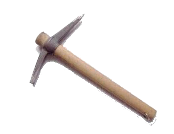
Data warehouses take advantage of multiple data sources, such as data extracted from production and then stored to enterprise databases, or even data from a third party’s information systems. A data warehouse should provide a unified view of all the data.


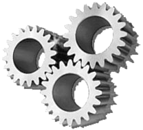
DFM: basic concepts
A fact is a concept relevant to decision-making processes. It typically models a set of events taking place within a company (e.g., sales, shipments, purchases, …). It is essential that a fact have dynamic properties or evolve in some way over time
A measure is a numerical property of a fact and describes a quantitative fact aspect that is relevant to analysis (e.g., every sale is quantified by its receipts)
A dimension is a fact property with a finite domain and describes an analysis coordinate of the fact. Typical dimensions for the sales fact are products, stores, and dates

A fact expresses a many-to-many relationship between its dimensions
Dimensional _ _ attribute _ (_ level )
The general term dimensional attributes stands for the dimensions and other possible attributes, always with discrete values, that describe them (e.g., a product is described by its type, by the category to which it belongs, by its brand, and by the department in which it is sold)
A hierarchy is a directed tree whose nodes are dimensional attributes and whose arcs model many-to-one associations between dimensional attribute pairs. It includes a dimension, positioned at the tree’s root, and all of the dimensional attributes that describe it

Data platform
Relational
NoSQL(Non relational)
[{
“_id”: 1,
“firstname”: “Alice”
}, {
“_id”: 2,
“name”: “Bob”
}]
[
(“k1”, “v1),
(“k2”, “v2)
]
Operational (relational)databases
- Data lake
- Couto et al.: “A DL is a store a varied amount of formats in big data ecosystems, from unstructured, semi-structured, to structured data sources”
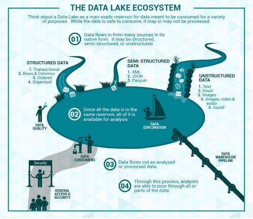
Couto, Julia, et al. “A Mapping Study about Data Lakes: An Improved Definition and Possible Architectures.” SEKE . 2019.https://dunnsolutions.com/business-analytics/big-data-analytics/data-lake-consulting
Relational
NoSQL (Non relational)
Storage of Raw Data
[{
“_id”: 1,
“firstname”: “Alice”
}, {
“_id”: 2,
“name”: “Bob”
}]
[
(“k1”, “v1),
(“k2”, “v2)
]

Operational (relational)databases


Data Lakehouse
- Data warehouse architecture as we know today will replaced by a new
- architectural pattern, the Lakehouse
- Based on open direct-access data formats, such as Apache Parquet
- Have first-class support for machine learning and data science
- Offer state-of-the-art performance
- Old architectures typically coupled compute and storage into an on-premises appliance
- This forced enterprises to provision and pay for the peak of user load and data under management
- Very costly as datasets grew
- More and more datasets were completely unstructured, e.g., video, audio, and text documents, which data warehouses could not store and query at all
- This forced enterprises to provision and pay for the peak of user load and data under management

Data Fabric and Data Mesh Approaches with AI (https://doi.org/10.1007/978-1-4842-9253-2)
- Data warehouse architecture as we know today will replaced by a new
- architectural pattern, the Lakehouse
- The data lakehouse enables storing all your data once in a data lake and efficiently doing AI and BI on that data directly at a massive scale
- ACID transaction support
- Schema enforcement
- Data governance
- All processes ensuring that data meet high quality standards throughout the whole lifecycles
- Including availability, usability, consistency, integrity, security
- Support for diverse workloads (e.g., data science, ML, SQL, analytics)
https://databricks.com/blog/2020/01/30/what-is-a-data-lakehouse.html
Data Independence
- Data independence can be explained using the three-schema architecture
- Data independence refers characteristic of being able to modify the schema at one level of the database system without altering the schema at the next higher level

Data lakehouse
- Data lakehouse
- Data management architecture that combines the flexibility, cost-efficiency, and scale of data lakes with the data management and ACID transactions of data warehouses, enabling business intelligence (BI) and machine learning (ML) on all data
- Vendor lock in

https://www.databricks.com/glossary/data-lakehouse

| Data warehouse | Data lake | Data lake house | |
|---|---|---|---|
| Data format | Closed, proprietary format | Open format (e.g., Parquet) | Open format |
| Types of data | Structured data, with limited support for semi-structured data | All types : Structured data, semi-structured data, textual data, unstructured (raw) data | All types: Structured data, semi-structured data, textual data, unstructured (raw) data |
| Data access | SQL-only, no direct access to file | Open APIs for direct access to files with SQL, R, Python and other languages | Open APIs for direct access to files with SQL, R, Python and other languages |
| Reliability | High quality , reliable data with ACID transactions | Low quality, data swamp | High quality, reliable data with ACID transactions |
| Governance and security | Fine-grained security and governance for row/columnar level for tables | Poor governance as security needs to be applied to files | Fine-grained security and governance for row/columnar level for tables |
| Performance | High | Low | High |
| Scalability | Scaling becomes exponentially more expensive | Scales to hold any amount of data at low cost, regardless of type | Scales to hold any amount of data at low cost, regardless of type |
| Use case support | Limited to BI, SQL applications and decision support | Limited to machine learning | One data architecture for BI, SQL and machine learning |
- Key technologies used to implement open source Data Lakehouses
- Databricks’ Delta Lake
- Apache Hudi
- Apache Iceberg
https://databricks.com/blog/2021/05/19/evolution-to-the-data-lakehouse.html
Polyglot Persistence
Polyglot persistence
To each application the appropriate DBMS

Data model heterogeneity


DM heterogeneity
Advanced solutions
- The challenge is to balance two often conflicting forces.
- Location Independence : A query is written and the system figures out which storage engine it targets
- Semantic Completeness : A query can exploit the full set of features provided by a storage engine
- Example of a polystore
- Island = a middleware application to support a set of operations on a given data model
- Shim = a wrapper to convert from the island’s query language to the target DB’s query language

Vijay Gadepally, Kyle O’Brien, Adam Dziedzic, Aaron J. Elmore, Jeremy Kepner, Samuel Madden, Tim Mattson, Jennie Rogers, Zuohao She, Michael Stonebraker: Version 0.1 of the BigDAWG Polystore System. CoRR abs/1707.00721 (2017)
DM heterogeneity
- BigDAWG middleware consists of
- Optimizer : parses the input query and creates a set of viable query plan trees with possible engines for each subquery
- Monitor : uses performance data from prior queries to determine the query plan tree with the best engine for each subquery
- Executor : figures out how to best join the collections and then executes the query
- Migrator : moves data from engine to engine when the plan calls for such data motion
- … and of course we have metadata
- Catalog : stores metadata about the system
- Databases: Databases, their engine membership, and connection authentication information.
- Objects: Data objects (i.e., tables), field-names, and object-to-database membership.
- Catalog : stores metadata about the system
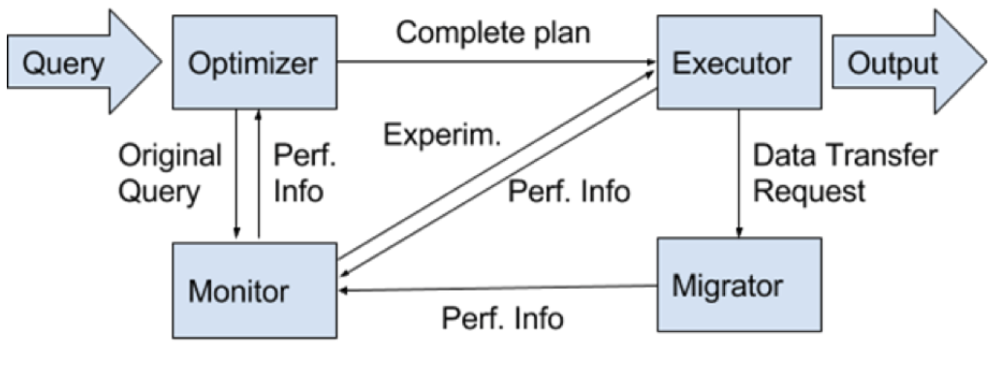
Vijay Gadepally, Kyle O’Brien, Adam Dziedzic, Aaron J. Elmore, Jeremy Kepner, Samuel Madden, Tim Mattson, Jennie Rogers, Zuohao She, Michael Stonebraker: Version 0.1 of the BigDAWG Polystore System. CoRR abs/1707.00721 (2017)
DM heterogeneity
- Most notable multistore/polystore proposals
- BigDAWG
- Focus on the ability to “move” data from one DB to another to improve query efficiency
- V. Gadepally et al. Version 0.1 of the BigDAWG __ __ Polystore __ System__ . CoRR _ abs/1707.00721 _ (2017)
- Focus on the ability to “move” data from one DB to another to improve query efficiency
- Estocada
- Focus on taking advantage of possible (consistent) redundancy and previous query results
- R. Alotaibi et al. ESTOCADA: Towards Scalable Polystore __ Systems__ . Proc. VLDB Endow . 13(12): 2949-2952 (2020)
- Focus on taking advantage of possible (consistent) redundancy and previous query results
- Awesome
- Focus on supporting common analytical functions
- S. Dasgupta. Analytics-driven data ingestion and derivation in the AWESOME polystore . IEEE BigData _ 2016_ : 2555-2564
- Focus on supporting common analytical functions
- CloudMdsQL
- Focus on taking advantage of local data store native functionalities
- B. Kolev et al. CloudMdsQL : querying heterogeneous cloud data stores with a common language . Distributed Parallel Databases 34(4): 463-503 (2016)
- Focus on taking advantage of local data store native functionalities
- BigDAWG
Schema profiling
- Schema profiles explain
- What are the differences between schemas
- When/why is one schema used instead of the other
- The problem of schema profiling is quite similar to a classification problem
- Classifiers are also used to describe the rules for assigning a class to an observation based on the other observation features
- Based on the requirements collected from potential users, decision trees emerged as the most adequate
| SchemaID | User | Activity | Weight | Duration | Repetitions |
|---|---|---|---|---|---|
| S1 | Jack | Run | 108 | ||
| S2 | John | Leg press | 80 | 4 | 23 |
| S1 | Kate | Walk | 42 | ||
| S3 | John | Push-ups | 8 | 40 |
Documents / Observations
Schema heterogeneity

The documents are the observations
The schema are the classes
Schema heterogeneity
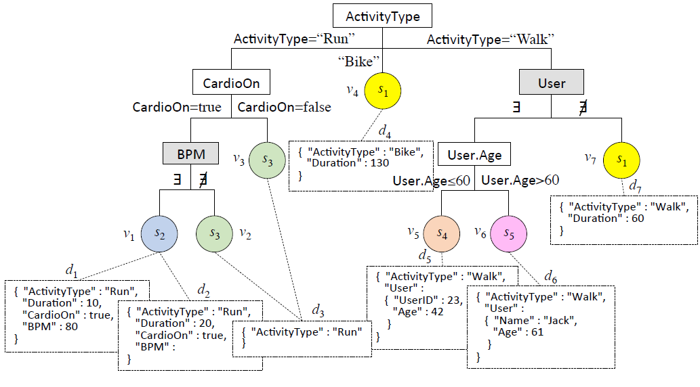
Value-based condition
Schema heterogeneity

Schema-based condition
Value-based condition
‘CardioOn’: false
Schema heterogeneity

Schema-based condition
Value-based condition
Schema heterogeneity
Explicativeness
- Value-based (VB) conditions are preferred to schema-based (SB) ones
- SB: acknowledge a difference between schemata
- VB: explain it in terms of the values taken by an attribute
- The less SB conditions, the more explicativeness


Schema heterogeneity
Conciseness
- A maximally concise schema profile is one where there is a single rule for each schema
- Schema entropy : inverts the original definition of entropy, relating it to the purity of the schemata instead of the purity of the leaves
- Entropy: a leaf is pure if it contains only documents with the same class
- Schema entropy: a schema is pure if all its documents are in the same leaf

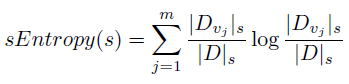
Schema profiling algorithm
Introduced the notion of schema entropy loss
Defined a criterion for comparing two splits in the decision tree
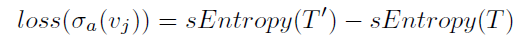

Schema heterogeneity
Integration techniques

- Integration at the intensional level
- Schema matching and mapping
- A match is a correspondence between attributes
- A mapping is a function to explain the relationship between attributes
- E.g., S1.FullName = CONCAT(S2.FirstName, S2.LastName)
- Schema matching and mapping
- Integration at the extensional level
- Entity resolution (a.k.a. record linkage or duplicate detection)
- Identifying (or linking, or grouping) different records referring to the same real-world entity
- Aims at removing redundancy and increasing conciseness
- Data fusion
- Fuse records on the same real-world entity into a single record and resolve possible conflicts
- Aims at increasing correctness of data
- Entity resolution (a.k.a. record linkage or duplicate detection)
E. Rahm, P.A. Bernstein, A survey of approaches to automatic schema matching , VLDB J. 10 (4) (2001)
Mandreoli, F., & Montangero, M. (2019). Dealing __ with data __ heterogeneity __ in a data fusion __ perspective : models , methodologies , and algorithms . In Data Handling in Science and Technology (Vol. 31, pp. 235-270). Elsevier.
Schema heterogeneity
OLAP querying
A first approach to OLAP on heterogeneous data
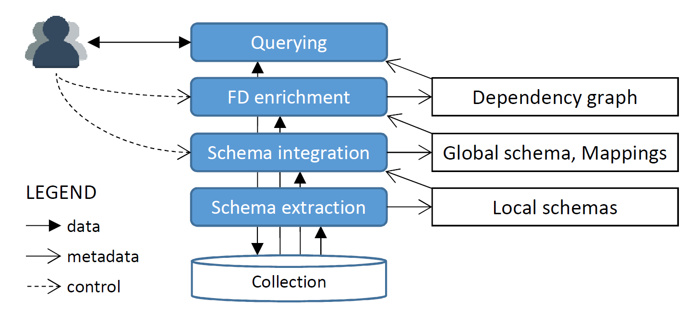

Gallinucci, E., Golfarelli, M., & Rizzi, S. (2019). Approximate OLAP of document-oriented databases: A variety-aware approach . Information Systems , 85, 114-130.
Schema heterogeneity
- Some limitations
- Expensive querying
- Does not scale well with the number of schemas
- Expensive integration
- High levels of heterogeneity imply complex rewriting rules (requiring knowledge and time)
- Assuming to be always able to obtain a global schema is a bit pretentious
- Expensive querying
Schema heterogeneity
- Some limitations
- Expensive querying
- Does not scale well with the number of schemas
- Expensive integration
- High levels of heterogeneity imply complex rewriting rules (requiring knowledge and time)
- Assuming to be always able to obtain a global schema is a bit pretentious
- “One does not simply define a global schema”
- Expensive querying

Schema heterogeneity
New integration techniques

Curry, E. (2020). Dataspaces: Fundamentals, Principles, and Techniques. Real-time Linked Dataspaces: Enabling Data Ecosystems for Intelligent Systems , 45-62.
Schema heterogeneity
- Replace the global schema with a dataspace
- A dataspace is a lightweight integration approach providing basic query expressive power on a variety of data sources, bypassing the complexity of traditional integration approaches and possibly returning best-effort or approximate answers
- Franklin, M., Halevy, A., & Maier, D. (2005). From databases to dataspaces: a new abstraction for information management . ACM Sigmod _ Record_ , 34 (4), 27-33.
- A dataspace is a lightweight integration approach providing basic query expressive power on a variety of data sources, bypassing the complexity of traditional integration approaches and possibly returning best-effort or approximate answers
- Replace traditional integration with a pay-as-you-go approach
- The system incrementally understands and integrates the data over time by asking users to confirm matches as the system runs
- Jeffery, S. R., Franklin, M. J., & Halevy, A. Y. (2008, June). Pay-as-you-go user feedback for dataspace systems . In Proceedings of the 2008 ACM SIGMOD international conference on Management of data (pp. 847-860).
- The system incrementally understands and integrates the data over time by asking users to confirm matches as the system runs
Curry, E. (2020). Dataspaces: Fundamentals, Principles, and Techniques. Real-time Linked Dataspaces: Enabling Data Ecosystems for Intelligent Systems , 45-62.
Schema heterogeneity
- Introducing new concepts
- Entities: representation of a real-world entity
- E.g., customers, products, orders, etc.
- Features: univocal representation of a group of semantically equivalent attributes
- E.g., CustomerName = { S1.name, S2.fullname, S3.customer, S4.cName, … }
- Mapping functions must be defined/definable between every couple
- Entities: representation of a real-world entity
- The dataspace becomes an abstract view in terms of features and entities
Schema heterogeneity
New OLAP querying
What it looks like


Forresi, C., Gallinucci, E., Golfarelli, M., & Hamadou, H. B. (2021). A dataspace-based __ __ framework __ for OLAP __ analyses __ in a high-__ variety __ __ multistore . The VLDB Journal , 30 (6), 1017-1040.
Schema heterogeneity
- Previous issues
- Expensive querying
- Schema heterogeneity solved at query time
- Requires complex - but feasible - algorithms
- Expensive integration
- Pay-as-you-go approach is quicker, iterative, and more flexible
- Dataspace is conceptual, untied to logical data modeling
- Expensive querying
- Now we have a multistore dealing with multipledata models and schema heterogeneity

Forresi, C., Gallinucci, E., Golfarelli, M., & Hamadou, H. B. (2021). A dataspace-based __ __ framework __ for OLAP __ analyses __ in a high-__ variety __ __ multistore . The VLDB Journal , 30 (6), 1017-1040.
Data fusion
- Merge operator
- Originally introduced as “full outer join merge”
- Naumann, F., Freytag, J. C., & Leser, U. (2004). Completeness of integrated information sources . Information Systems , 29 (7), 583-615.
- Aims to keep as much information as possible when joining the records of two schemas
- Avoid any loss of records
- Resolve mappings by providing transcoded output
- Resolving conflicts whenever necessary
- Originally introduced as “full outer join merge”
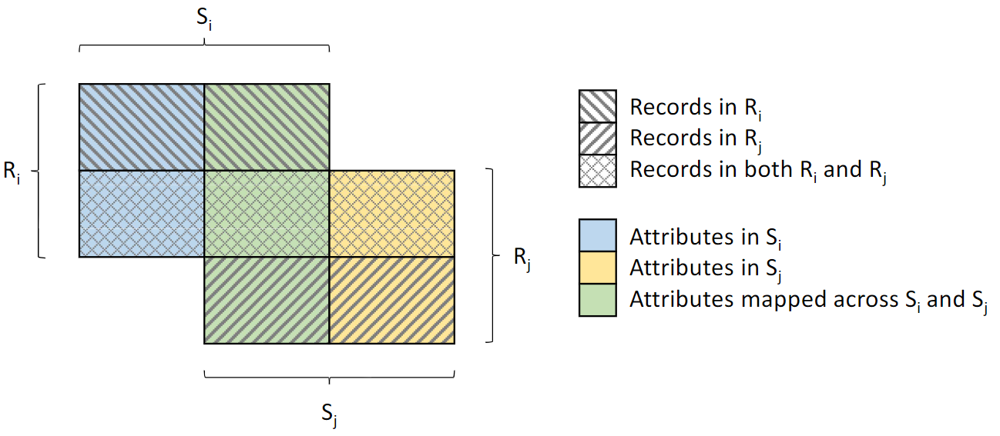
Data inconsistency
- Merge operator
- Originally introduced as “full outer join merge”
- Naumann, F., Freytag, J. C., & Leser, U. (2004). Completeness of integrated information sources . Information Systems , 29 (7), 583-615.
- Aims to keep as much information as possible when joining the records of two schemas
- Avoid any loss of records
- Resolve mappings by providing transcoded output
- Resolving conflicts whenever necessary
- Originally introduced as “full outer join merge”

Schema
matching
Data inconsistency
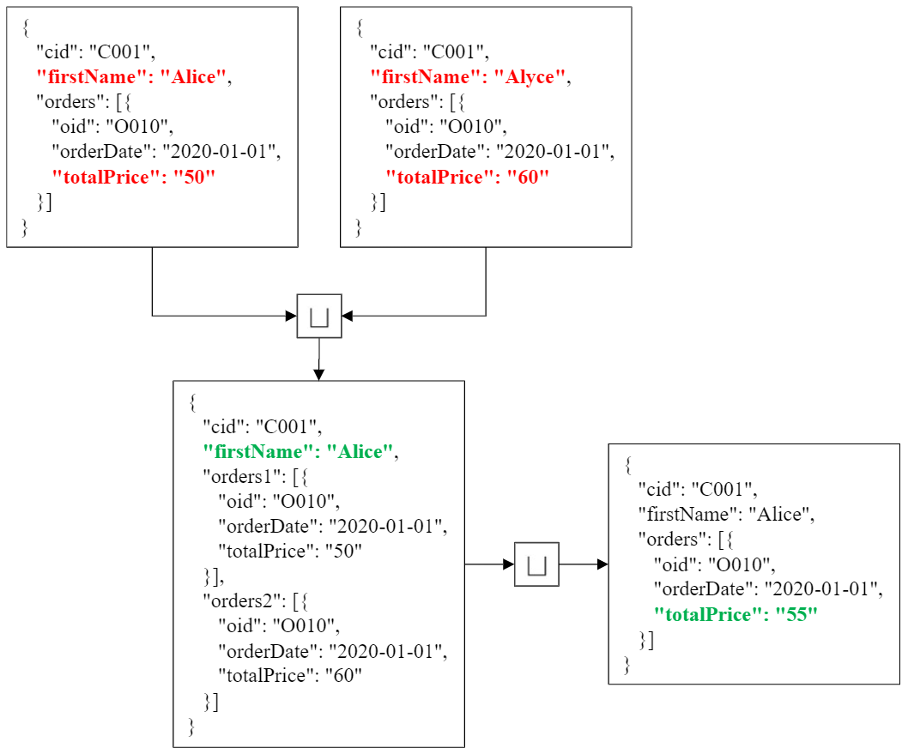
Data inconsistency
On-the-fly data fusion
- Merge operator in a query plan
- Take the data from heterogeneoussources (in different colors)
- Extract records of the single entites(e.g., customer, products)
- Merge each entity
- Join and produce the final result
- Now we have a multistore dealing with multiple data models,schema heterogeneity, and datainconsistency
- Are we done? Not yet!

- Main issue: performance
- Collections accessed more than once
- Most effort pulled to the middleware
- What can we do about it?
- Exploit more the local DBMSs
- Exploit local data modelling
- Carry out multi-entity merges
- Issues
- Several query plans could be devised
- Hard to find the most efficient one

Query optimization
Same query, several query plans
Consistent representation of customers, orders, and orderlines
- What is the most efficient solution?
- Single-entity merge and subsequent joins
- Nest relational data and multi-merge with documents
- Join relational data and multi-merge with flattened documents
- Depends on several factors
- On the capabilities of each DBMS/middleware
- On the presence of indexes and statistics
- On the resources available to each DBMS/middleware
- On the number of records involved on each side
- … which can change over time
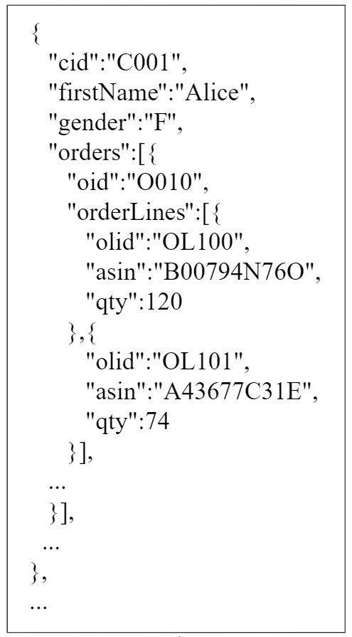

Query optimization
Cost modelling
- Cost-based evaluation of different plans
- White-box cost modelling
- Associate theoretical formulas to each query operators, then build up the cost of a query by summing the cost of each operation
- Cost can be determined in terms of disk I/O, CPU, network
- Requires an enormous effort to effectively model the many factors that contribute to query costs in a complex and heterogeneous environment like a multistore
- Black-box cost modelling
- Hide the behavior of an execution engine within a black-box, where the known information is mostly limited to the issued queries and the given response times
- Cost is determined in terms of time
- Easily adapts to evolving environments
- Suffers from cold-start
- White-box cost modelling
Query optimization

White-box cost modellingexample

Forresi, C., Francia, M., Gallinucci, E., & Golfarelli, M. (2021). Optimizing execution plans in a multistore. In Advances in Databases and Information Systems: 25th European Conference, ADBIS 2021.
Query optimization
Black-box cost modellingexample
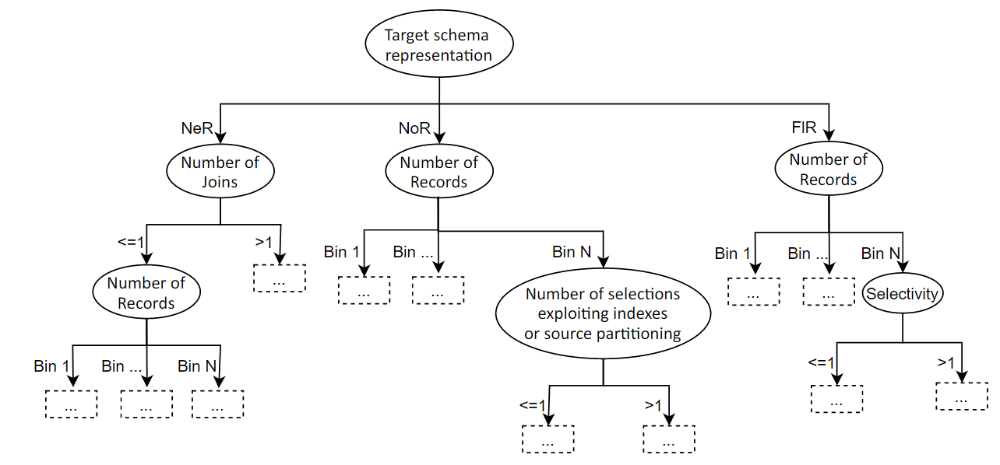

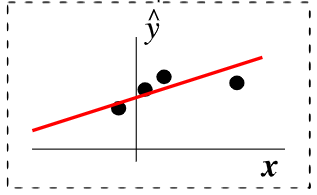

Forresi, C., Francia, M., Gallinucci, E., & Golfarelli, M. (2022). Cost-based Optimization of Multistore Query Plans. Information Systems Frontiers, 1-27.
From DevOps…
DevOps combines development and operations to increase the efficiency, speed, and security of software development and delivery compared to traditional processes.
DevOps practices enable software development (dev) and operations (ops) teams to accelerate delivery through automation, collaboration, fast feedback, and iterative improvement

https://about.gitlab.com/topics/devops/ (accessed 2023-06-03)

DataOps

- From DevOps to DataOps
- “A collaborative data management practice focused on improving the communication, integration and automation of data flows between data managers and data consumers across an organization”
- Data analytics improved in terms of velocity, quality, predictability and scale of software engineering and deployment
- Some key rules
- Establish progress and performance measurements at every stage
- Automate as many stages of the data flow as possible
- Establish governance discipline ( governance-as-code )
- Design process for growth and extensibility

Gartner, 2020 https://www.gartner.com/smarterwithgartner/how-dataops-amplifies-data-and-analytics-business-valueAndy Palmer, 2015 https://www.tamr.com/blog/from-devops-to-dataops-by-andy-palmer/ William Vorhies, 2017 https://www.datasciencecentral.com/profiles/blogs/dataops-it-s-a-secret
Top Players https://solutionsreview.com/data-management/the-best-data-fabric-tools-and-software/ https://em360tech.com/top-10/data-modelling-fabric Predictions https://live-datastaxd8.pantheonsite.io/sites/default/files/2021-02/Predicts_2021_Data__735776_ndx.pdf


Gartner, 2021 https://www.gartner.com/smarterwithgartner/data-fabric-architecture-is-key-to-modernizing-data-management-and-integration
https://www.youtube.com/watch?v=_bmYXWCxF_Q
- Data Mesh organizes data around business domain owners and transforms relevant data assets (data sources) to data products that can be consumed by distributed business users from various business domains or functions
- Data products are created, governed, and used in an autonomous, decentralized , and self-service manner
- Self-service capabilities , which we have already referenced as a Data Fabric capability, enable business organizations to entertain a data marketplace with shopping-for-data characteristics

(Some) References
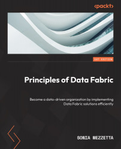


Knowledge representation
- A classification of metadata
- Technical metadata
- Capture the form and structure of each dataset
- E.g.: type of data (text, JSON, Avro); structure of the data (the fields and their types)
- Operational metadata
- Capture lineage, quality, profile, and provenance of the data
- E.g.: source and target locations of data, size, number of records, and lineage
- Business metadata
- Captures what it all means to the user
- E.g.: business names, descriptions, tags, quality, and masking rules for privacy
- Technical metadata
A. LaPlante, B. Sharma, Architecting Data Lakes , O’Reilly Media , Sebastopol, 2018.
Knowledge representation
- Another classification of metadata
- Intra-object metadata
- Properties provide a general description of an object in the form of key-value pairs
- Summaries and previews provide an overview of the content or structure of an object
- Semantic metadata are annotations that help understand the meaning of data
- Inter-object metadata
- Objects groupings organize objects into collections, each object being able to belong simultaneously to several collections
- Similarity links reflect the strength of the similarity between two objects
- Parenthood relationships reflect the fact that an object can be the result of joining several others
- Global metadata
- Semantic resources , i.e., knowledge bases (ontologies, taxonomies, thesauri, dictionaries) used to generate other metadata and improve analyses
- Indexes , i.e., data structures that help find an object quickly
- Logs , used to track user interactions with the data lake
- Intra-object metadata
Sawadogo, P. N., Scholly, E., Favre, C., Ferey, E., Loudcher, S., & Darmont, J. (2019, September). Metadata systems for data lakes: models and features . In _ European conference on advances in databases and information systems _ (pp. 440-451). Springer, Cham.

Sawadogo, P. N., Scholly, E., Favre, C., Ferey, E., Loudcher, S., & Darmont, J. (2019, September). Metadata systems for data lakes: models and features . In European conference on advances in databases and information systems (pp. 440-451). Springer, Cham.
Knowledge representation


Few details given on metamodel and functionalities.
No metadata collected on operations.
Hai, R., Geisler, S., & Quix, C. (2016, June). Constance: An intelligent data lake system . In Proceedings of the 2016 international conference on management of data (pp. 2097-2100).
Knowledge representation


No discussion about the functionalities provided.
No metadata collected on operations and agents.
Quix, C., Hai, R., & Vatov, I. (2016). GEMMS: A Generic and Extensible Metadata Management System for Data Lakes . In CAiSE _ forum_ (Vol. 129).
Knowledge representation

Crawls Google’s storage systems to extract basic metadata on datasets and their relationship with other datasets.
Performs metadata inference, e.g., to determine the schema of a non-self-describing dataset, to trace the provenance of data through a sequence of processing services, or to annotate data with their semantics.

Strictly coupled with the Google platform.
Mainly focuses on object description and searches.
No formal description of the metamodel.
Halevy, A. Y., Korn, F., Noy, N. F., Olston, C., Polyzotis, N., Roy, S., & Whang, S. E. (2016). Managing Google’s data lake: an overview of the Goods system . IEEE Data Eng. Bull. , 39 (3), 5-14.
Knowledge representation

Version graphs represent data versions.
Model graphs represent application metadata, i.e., how data are interpreted for use.
Lineage graphs capture usage information.

Not enough details given to clarify which metadata are actually handled.
Functionalities are described at a high level.
Hellerstein, J. M., Sreekanti, V., Gonzalez, J. E., Dalton, J., Dey, A., Nag, S., … & Sun, E. (2017, January). Ground: A Data Context Service . In CIDR .
Knowledge representation


Support users in creating and optimizing the data processing pipelines.
Only goal-related metadata are collected.

Maccioni, A., & Torlone, R. (2018, June). KAYAK: a framework for just-in-time data preparation in a data lake . In International Conference on Advanced Information Systems Engineering (pp. 474-489). Springer, Cham.
Knowledge representation

Technical
Operational
Business
Francia, M., Gallinucci, E., Golfarelli, M., Leoni, A. G., Rizzi, S., & Santolini, N. (2021). Making data platforms smarter with MOSES . Future Generation Computer Systems , 125, 299-313.
Knowledge representation

Francia, M., Gallinucci, E., Golfarelli, M., Leoni, A. G., Rizzi, S., & Santolini, N. (2021). Making data platforms smarter with MOSES . Future Generation Computer Systems , 125, 299-313.
Knowledge representation

Not pre-defined
Domain-independent,
extensible
Francia, M., Gallinucci, E., Golfarelli, M., Leoni, A. G., Rizzi, S., & Santolini, N. (2021). Making data platforms smarter with MOSES . Future Generation Computer Systems , 125, 299-313.
Knowledge representation

Tune the trade-off between the level of detail of the functionalities and the required computational effort
Francia, M., Gallinucci, E., Golfarelli, M., Leoni, A. G., Rizzi, S., & Santolini, N. (2021). Making data platforms smarter with MOSES . Future Generation Computer Systems , 125, 299-313.
Knowledge representation

Francia, M., Gallinucci, E., Golfarelli, M., Leoni, A. G., Rizzi, S., & Santolini, N. (2021). Making data platforms smarter with MOSES . Future Generation Computer Systems , 125, 299-313.
Knowledge representation

Functionalities
Semantic enrichment
Data indexing
Link generation
Data polymorphism
Data versioning
Usage tracking
Francia, M., Gallinucci, E., Golfarelli, M., Leoni, A. G., Rizzi, S., & Santolini, N. (2021). Making data platforms smarter with MOSES . Future Generation Computer Systems , 125, 299-313.
Knowledge representation
How would you implement the meta-model?
Knowledge representation
Formal Definition


Extracted from: R. Angles et al. Foundations of Modern Query Languages for Graph Databases
Example of Property Graph

Formal definition:

Knowledge representation
Traversing Data in a RDBMS
In the relational theory, it is equivalent to joining data (schema level) and select data (based on a value)

SELECT *
FROM user u, user_order uo, orders o, items i
WHERE u.user = uo.user AND uo.orderId = o.orderId AND i.lineItemId = i.LineItemId
AND u.user = ‘Alice’
Example of data platform: MOSES

- Example of a data platform (MOSES)
- Functional architecture
- Components of MOSES are in orange
- Others are standard components in charge of producing/consuming, processing, storing, and visualizing data
- The orchestrator (e.g., Oozie) manages (e.g., schedules) the data transformation processes
Metadata Extractor


Metadata Search
Engine


Provenance Manager


Custom components


Process Interfaces
MOSES Interfaces
Other Interfaces
Workflow Administration
Francia, M., Gallinucci, E., Golfarelli, M., Rizzi, S. et al. (2021). Making data platforms smarter with MOSES. Future Generation Computer Systems, 125, 299-313.
Knowledge exploitation
Data profiling
- Data profiling
- A broad range of methods to efficiently analyze a given data set
- E.g., in a functional dependencies and association rules

Naumann, Felix. “Data profiling revisited.” ACM SIGMOD Record 42.4 (2014): 40-49.
- Use cases
- Query optimization
- Performed by DBMS to support query optimization with statistics about tables and columns
- Profiling results can be used to estimate the selectivity of operators and the cost of a query plan
- Data cleansing (typical use case is profiling data)
- Prepare a cleansing process by revealing errors (e.g., in formatting), missing values or outliers
- Data integration and analytics
- Query optimization
- Challenges?
Naumann, Felix. “Data profiling revisited.” ACM SIGMOD Record 42.4 (2014): 40-49.
| a | b | c | d |
|---|---|---|---|
| 1 | 1 | 2 | 2 |
| 1 | 2 | 1 | 4 |
- Challenges
- The results of data profiling are computationally complex to discover
- E.g., discovering keys/dependencies usually involves some sorting step for each considered column
- Verification of complex constraints on column combinations in a database
- What is the complexity of this task?
- The results of data profiling are computationally complex to discover
Naumann, Felix. “Data profiling revisited.” ACM SIGMOD Record 42.4 (2014): 40-49.
Knowledge exploitation
Object profiling and search
- Discoverability is a key requirement for data platforms
- Simple searches to let users locate “known” information
- Data exploration to let users uncover “unknown” information
- Common goal: identification and description of Objects
- Two levels of querying
- Metadata level (most important)
- Data level (can be coupled with the first one)
Knowledge exploitation
- Basic search
- MATCH (o:Object)-[]-(:Project {name:“ABC”})RETURN o
- Return all objects of a given project
- MATCH (o:Object)-[]-(d:DataLakeArea)WHERE d.name = “Landing” AND o.name LIKE “2021_%”AND o.size < 100.000RETURN o
- Return small objects with a given name pattern in the landing area
- MATCH (o:Object)-[]-(:Project {name:“ABC”})RETURN o

100000 kb = 100 mb
Knowledge exploitation
- Schema-driven search
- MATCH (o:Object)-[]-(:Schema)-[]-(a:Attribute), (a)-[]-(:Domain {name: “FiscalCode”})RETURN o
- Return objects that contain informationreferring to a given Domain
- MATCH (o:Object)-[]-(:Schema)-[]-(a:Attribute), (a)-[]-(:Domain {name: “FiscalCode”})RETURN o

100000 kb = 100 mb
Knowledge exploitation
- Provenance-driven search
- MATCH (obj1:Object)-[:readsFrom]-(o:Operation)-[:writesTo]-(obj2:Object)CREATE (obj1)-[:ancestorOf]->(obj2)
- MATCH (:Object {id:123})-[:ancestorOf*]-(obj:Object)RETURN obj
- Discover objects obtained from a given ancestor
- MATCH (obj:Object)-[:ancestorOf*]-(:Object {id:123})RETURN obj
- Discover object(s) from which another has originated
- Example: a ML team wants to use datasets that were publicized as canonical for certain domains, but they find these datasets being too “groomed” for ML
- Provenance links can be used to browse upstream and identify the less-groomed datasets that were used to derive the canonical datasets

100000 kb = 100 mb
Knowledge exploitation
- Similarity-driven search
- MATCH (:Object {id:123})-[r:similarTo]-(o:Object)WHERE r.similarityType=“affinity”RETURN o
- Discover datasets to be merged in a certain query
- MATCH (:Object {id:123})-[r:similarTo]-(o:Object)WHERE r.similarityType=“joinability”RETURN o
- Discover datasets to be joined in a certain query
- Group similar objects and enrich the search results
- List the main objects from each group
- Restrict the search to the objects of a single group
- MATCH (:Object {id:123})-[r:similarTo]-(o:Object)WHERE r.similarityType=“affinity”RETURN o

100000 kb = 100 mb
Knowledge exploitation
- Semantics-driven search
- MATCH (o:Object)-[:isDescribedBy]-(:OntologyTerm {uri:“http://…”})RETURN o
- MATCH (o:Object)-[*]-(any), (any)-[:isDescribedBy]-(:OntologyTerm {uri:“http://…”})RETURN o
- Search objects without having any knowledge of theirphysical or intensional properties, but simply exploitingtheir traceability to a certain semantic concept

100000 kb = 100 mb
Knowledge exploitation
- Profiling
- MATCH (o:Object)-[]-(:OntologyType {name:“Table”}), (o)-[]-(s:Schema)-[]-(a:Attribute), (o)-[r:similarTo]-(o2:Object), (o)-[:ancestorOf]-(o3:Object), (o4:Object)-[:ancestorOf]-(o)RETURN o, s, a, r, o2, o3, o4
- Shows an object’s properties, list the relationships with other objects in terms of similarity and provenance
- Compute a representation of the intensional features that mostly characterize a group of objects(see slides on schema heterogeneity)
- MATCH (o:Object)-[]-(:OntologyType {name:“Table”}), (o)-[]-(s:Schema)-[]-(a:Attribute), (o)-[r:similarTo]-(o2:Object), (o)-[:ancestorOf]-(o3:Object), (o4:Object)-[:ancestorOf]-(o)RETURN o, s, a, r, o2, o3, o4

Data provenance
- Provenance (also referred to as lineage, pedigree, parentage, genealogy)
- The description of the origins of data and the process by which it arrived at the database
- Not only data products (e.g., tables, files), but also the processes that created them
- Use cases
- Business domain. Users traditionally work with an need to be identified and corrected to avoid costly errors in business forecasting.
- Scientific/research domain. copyright _ of data are significant when using third-party data in such a loosely connected network._
Simmhan, Yogesh L., Beth Plale, and Dennis Gannon. “A survey of data provenance techniques.” Computer Science Department, Indiana University, Bloomington IN 47405 (2005): 69.
- Astronomers are creating an international Virtual Observatory
- A provision of the computational resources needed to exploit the data scientifically
- Astronomy changed from being an individualistic to a collective enterprise
- Telescope time is devoted/allocated to systematic sky surveys and analysis is performed using data from the archives
- Astronomers are increasingly relying on data that they did not take themselves
- Raw data bear many instrumental signatures that must be removed in the process of generating data products

Mann, Bob. “Some data derivation and provenance issues in astronomy.” Workshop on Data Derivation and Provenance, Chicago . 2002.https://www.esa.int/Science_Exploration/Space_Science/Webb/Webb_inspects_the_heart_of_the_Phantom_Galaxy (accessed 2022-08-01)

Simmhan, Yogesh L., Beth Plale, and Dennis Gannon. “A survey of data provenance techniques.” Computer Science Department, Indiana University, Bloomington IN 47405 (2005): 69.
- Granularity
- Fine-grained (instance level): tracking data items (e.g., a tuple in a dataset) transformations
- Coarse-grained (schema-level): tracking dataset transformations
- Queries
- Where provenance: given some output, which inputs did the output come from?
- How provenance: given some output, how were the inputs manipulated?
- Why provenance: given some output, why was data generated?
- E.g., in the form of a proof tree that locates source data items contributing to its creation
Simmhan, Yogesh L., Beth Plale, and Dennis Gannon. “A survey of data provenance techniques.” Computer Science Department, Indiana University, Bloomington IN 47405 (2005): 69.Ikeda, Robert, and Jennifer Widom. Data lineage: A survey . Stanford InfoLab, 2009.
Knowledge exploitation
Data provenance
- Data provenance, an example of data management
- Metadata pertaining to the history of a data item
- Pipeline including the origin of objects and operations they are subjected to
- We have a standard: https://www.w3.org/TR/prov-dm/

https://www.w3.org/TR/prov-dm/
- Entity
- Physical/conceptual things
- Activity
- Dynamic aspects of the world, such as actions
- How entities come into existence, often making use of previously existing entities
- Agent
- A person, a piece of software
- Takes a role in an activity such that the agent can be assigned some degree of responsibility for the activity taking place

https://www.w3.org/TR/2013/NOTE-prov-primer-20130430/
Knowledge exploitation
Provenance and versioning
- PROV: a standard for provenance modeling
- Several tools exists for managing PROV metadata
- Compliance with PROV ensures integration with existing tools for querying and visualization

L. Moreau, P. T. Groth, Provenance: An Introduction to PROV , Synthesis Lectures on the Semantic Web: Theory and Technology , Morgan & Claypool Publishers, 2013.
Graph DB and Centrality Measures
- Measures of centrality
- Betweenness centrality (A)
- Number of shortest paths between two nodes that pass from a certain node
- Closeness centrality (B)
- Sum of distances to all other nodes.
- Eigenvector centrality (C)
- The score of a node is influenced by score of adjacent nodes (Page rank)
- Degree centrality (D)
- Number of adjacent nodes
- Betweenness centrality (A)

Knowledge exploitation
Orchestration support
- The orchestrator is the component in charge of controlling the execution of computation activities
- Either through a regular scheduling of the activities
- Or by triggering a process in response to a certain event
- Several entities (either processes or human beings) can cover this role to activate some data processes #
100000 kb = 100 mb
Knowledge exploitation
- Orchestration functionalities (activated by metadata)
- Dynamic/condition-based behavior
- Decide what data process should be activated under different conditions
- Decide how to tune the parameters in case of parametric data processes
- Triggering
- Decide when to trigger a certain data process
- Scoping
- Assess the trustworthiness of objects to decide if a certain data process should be activated or not
- Resource estimation/prediction
- Decide the optimal amount of resources required to terminate successfully while leaving sufficient resources to the other concurrent process, based on previous executions and current settings
- Negotiate the resources with the cluster’s resource manager #
- Dynamic/condition-based behavior
100000 kb = 100 mb
Knowledge exploitation

- Orchestration requirements & challenges
Barika, M., Garg, S., Zomaya, A. Y., Wang, L., Moorsel, A. V., & Ranjan, R. (2019). Orchestrating big data analysis workflows in the cloud: research challenges, survey, and future directions . ACM Computing Surveys (CSUR) , 52 (5), 1-41.
Compression
- Summarization / compression
- Present a concise representation of a dataset in a comprehensible and informative manner

Ahmed, Mohiuddin. “Data summarization: a survey.” Knowledge and Information Systems 58.2 (2019): 249-273.
Entity resolution
- Entity resolution
- (also known as entity matching, linking)
- Find records that refer to the same entity across different data sources (e.g., data files, books, websites, and databases)

Papadakis, George, et al. “Blocking and filtering techniques for entity resolution: A survey.” ACM Computing Surveys (CSUR) 53.2 (2020): 1-42.
Data versioning
- Version control
- A class of systems responsible for managing changes to computer programs, documents, or data collections
- Changes are identified by a number/letter code, termed the revision/version number
- However, data pipelines are not only about code bult also about
- Model Version control
- Data Version Control
- Model Parameter Tracking
- Model Performance Comparison

Support CRUD (Create, Read, Update, Delete) operations with versions
E.g., on AWS (PUT, GET, DELETE), what about update?


https://docs.aws.amazon.com/AmazonS3/latest/userguide/versioning-workflows.html (accessed 2022-08-01)
CRISP-DM
- The CR oss I ndustry S tandard P rocess for D ata M ining ( CRISP-DM ) is a process model that serves as the base for a data science process. It has six sequential phases:
- Business understanding – What does the business need?
- Data understanding – What data do we have / need? Is it clean?
- Data preparation – How do we organize the data for modeling?
- Modeling – What modeling techniques should we apply?
- Evaluation – Which model best meets the business objectives?
- Deployment – How do stakeholders access the results?

Pipelines for ML tasks


- Tuning pipelines is hard
- At each step , a technique must be selected
- For each technique, a set of hyper-parameters must be set
- Each hyper-parameter has its own search space

AutoML
- AutoML aims at automating the ML pipeline instantiation:
- it is difficult to consider all the constraints together;
- it is not transparent;
- it doesn’t allow a proper knowledge augmentation.

Thornton, et al. Auto-WEKA: Combined selection and hyperparameter optimization of classification algorithms. In Proceedings of the 19th ACM SIGKDD international conference on Knowledge discovery and data mining (pp. 847-855).Feurer, Matthias, et al. “Auto-sklearn 2.0: Hands-free automl via meta-learning.” The Journal of Machine Learning Research 23.1 (2022): 11936-11996.
HAMLET
- HAMLET: Human-centric AutoML via Logic and Argumentation
- HAMLET leverages :
- Logic to give a structure to the knowledge;
- Argumentation to deal with inconsistencies, and revise the results.

https://github.com/QueueInc/HAMLET Francia M., Giovanelli J., and Pisano P. ”HAMLET: A framework for Human-centered AutoML via Structured Argumentation.” Future Generation Computer Systems 142 (2023): 182-194.
- The LogicalKB enables:
- the Data Scientist to structure the ML constraints;
- the AutoML tool to encode the explored results

- The Problem Graph allows to:
- consider all the ML constraints together;
- set up the AutoML search space;
- discuss and argument about the results.

- The Data Scientist iterates on:
- editing the LogicalKB;
- consulting the Problem Graph;
- running the AutoML tool;
- discussing the AutoML insights.

KB and Problem Graph

pipeline
).
.
).
algorithms
).
).

pipeline
).
).
).
algorithms
).
).
# Forbid Normalization when using DT
c1 : ⇒ forbidden(⟨N ⟩, Dt).

pipeline
).
).
).
algorithms
).
).
# Forbid Normalization when using DT
c1 : ⇒ forbidden(⟨N ⟩, Dt).
# Mandatory Normalization in Classification Pipelines
c2 : ⇒ mandatory(⟨N ⟩, Cl).

pipeline
).
).
).
algorithms
).
).
# Forbid Normalization when using DT
c1 : ⇒ forbidden(⟨N ⟩, Dt).
# Mandatory Normalization in Classification Pipelines
c2 : ⇒ mandatory(⟨N ⟩, Cl).

pipeline
).
).
).
algorithms
).
).
# Forbid Normalization when using DT
c1 : ⇒ forbidden(⟨N ⟩, Dt).
# Mandatory Normalization in Classification Pipelines
c2 : ⇒ mandatory(⟨N ⟩, Cl).
# Resolve conflict between c1 and c2sup (c1, c2).
Evaluation
- Settings:
- Baseline : 1 optimization it. of 60 mins;
- PKB (Preliminary Knowledge Base): 1 optimization it. of 60 mins with non-empty LogicalKB;
- IKA (Iterative Knowledge Augmentation): 4 optimization it. of 15 mins with empty LogicalKB;
- PKB + IKA: 4 optimization it. of 15 mins with non-empty LogicalKB.

- Settings:
- Baseline : 1 optimization it. of 60 mins;
- PKB (Preliminary Knowledge Base): 1 optimization it. of 60 mins with non-empty LogicalKB;
- IKA (Iterative Knowledge Augmentation): 4 optimization it. of 15 mins with empty LogicalKB;
- PKB + IKA: 4 optimization it. of 15 mins with non-empty LogicalKB.

Comparison with AutoML tools

HAMLET
- Key features:
- knowledge injection;
- representation via an human- and
- machine-readable medium;
- insight discovery;
- dealing with possible arising inconsistencies.
- Future directions:
- make constraints fuzzy;
- improve recommendation algorithm;
- enhance HAMLET with meta-learning;
- manage cross-cutting constraints (e.g., ethic, legal).

Advanced Analytics
Applications and Challenges
- High availability and accessibility attract new data scientists
- High competence in business domain
- Low competence in computer science
- Since the ’70s, relational queries to retrieve data
- Comprehension of formal languages and DBMS
- Advanced analytics (semi-automatic transformation)
- “Information” and “Knowledge” levels
Wisdom
(Decisions)
analytics
Knowledge
(Data Mining)
Hand-free scenarios

Information
(Data Warehouse, OLAP)

Data
(Operational DB, OLTP)
- Many problems to address:
- Query recommendation based on contextual data
- E.g., augmented reality and digital twins
- Definition of interest
- Diversification
- Compression
- Natural Language and Vocalization
- Query recommendation based on contextual data
Application scope
- Enable analytics through augmented reality [1]
- E.g., an inspector analyzing production rates
- Sense the context through augmented devices
- E.g., smart glasses
- Detect interaction and engagement [1]
- Produce analytical reports
- Relevant to the sensed context
- Cardinality constraint
- Near real-time
Analytical Reports


[1] Francia, Matteo, Matteo Golfarelli, and Stefano Rizzi. “A-BI+: a framework for Augmented Business Intelligence.” Information Systems 92 (2020): 101520.[2] Yu-Chuan Su, Kristen Grauman: Detecting Engagement in Egocentric Video. ECCV (5) 2016: 454-471
Sistemi come recommender system di Amazon possono usare dati contestuali (e.g, la posizione), tuttavia Ci sono differenze sia differenze di «metodo» / «framework» che di «recommendation» «Metodo» - Amazon si basa su verità «più storiche», noi interpretiamo e «mixiamo» un contesto real-time costituito da più oggetti interessanti rilevati (e/o ingaggiati) dal sistema - Il nostro sistema è «end-to-end», cioè riguarda anche la gestione e linking dei dati per la costruzione delle query
«Recommendation», formalmente noi usiamo un approccio ibrido (mentre i classici sono item-based o collaborative) - Mix di conoscenza real-time con storica: Non siamo strettamente log-based (i.e., il contesto ci serve per un cold-start problem). Mentre il consiglio di amazon è «altri utenti hanno acquistato/visualizzato anche…»- Cardinalità del risultato per fare fit di un device augmented- Diversification di query diverse, non di una singola query

Augmented OLAP
- Augmented OLAP, a 3D marriage
- Augmented reality
- Real-time information [2]
- Business intelligence
- OLAP: get data facts
- Recommendation
- Pick relevant data facts
- Augmented reality
Augmented Reality
(real-time)
Inputs
Output
Query Log
(experience)
Data Mart
& Mappings
(a-priori)


[2] Angelo Croatti, Alessandro Ricci: Towards the Web of Augmented Things. ICSA Workshops 2017: 80-87
What can we sense?

- Data Mart: repository of multidimensional cubes
- Cubes representing business facts
- Data dictionary
- What we can recognize (i.e., md-elements)
- Context : subset of md-elements
- Mappings to sets of md-elements
- A-priori interest
<Object, Seat> dist = 1m
<Object, BikeExcite> dist = 2m
<Location, RoomA.1>
<Date, 16/10/2018>
<Role, Controller>
Quantity
Revenues
AssembledItems
AssemblyTime
Recommendation

- Context interpretation
- Given context T over the data dictionary
- Project _ T_ to an image of fragments I through mappings
- Fragment : intuitively a “small” query
- Add the log
- Get queries with positive feedback from similar contexts
- Enrich I to I* with unperceived elements from T
- Each fragment has contextual and log relevance
- Get queries with positive feedback from similar contexts
- Query generation
- Cannot directly translate I* into a well-formed query
- High cardinality I* = hardly interpretable “monster query”
Analytical Reports
recommended queries
relevant queries
<Object, Seat> dist = 1m
<Object, BikeExcite> dist = 2m
<Location, RoomA.1>
<Date, 16/10/2018>
<Role, Controller>
Query generation
Query selection
- Given #queries ( rq ), maximize the covered fragments and minimize their overlapping
- E.g., given two queries q’
- (q’) – sim(q, q’) * ( rel (q) + rel (q’)) / 2
- Weighted Maximum Coverage Problem (NP-hard)
- Greedy: iteratively pick query maximizing rel T
- Only a few query are retrieved, not expensive

Effectiveness


|T| = 12, rq _ = 4_
- Best query (with user exp.)
- After 2 visits: 0.95, 4 visits: 0.98
- Best query (no user exp.)

Efficiency

Motivation
- Enable analytics through natural language
- OLAP provides low-level operators [1]
- Users need to have knowledge on the multidimensional model…
- … or even programming skills
- We introduce COOL (COnversational OLap) [3]
- Translate natural language into formal queries

[1] Panos Vassiliadis, Patrick Marcel, Stefano Rizzi: Beyond roll-up’s and drill-down’s: An intentional analytics model to reinvent OLAP. Inf ormation __ Systems__ . (2019)
[2] Matteo Francia, Matteo Golfarelli, Stefano Rizzi: A-BI+: A framework for Augmented Business Intelligence. Inf ormation __ Systems__ . (2020)
[3] Matteo Francia, Enrico Gallinucci, Matteo Golfarelli: COOL: A Framework for Conversational OLAP. Inf ormation __ Systems__ . (2021)
COOL: architecture


Metadata
& values
Automatic
KB feeding
Manual KB enrichment
DIFF: [17] returns tuples that maximize difference between cells of a cube given as input Profile user exploration to recommend which unvisited parts of the cube RELAXoperator allows toverify whether a pattern observed at a certain level of detail ispresent at a coarser level of detail too [19] Alternative operators have also been proposed in theCinecubes method [7,8]. The goal of this effort is to facilitateautomated reporting, given an original OLAP query as input.To achieve this purpose two operators (expressed asacts) areproposed, namely, (a)put-in-context, i.e., compare the result ofthe original query to query results over similar, sibling values;and (b)give-details, where drill-downs of the original query’sgroupers are performed.
Sales by Customer and Month


Annotated parse forest
Disambiguation
& Enhancement
Execution & Visualization


Metadata
& values
Automatic
KB feeding
Manual KB enrichment
Jagadish: The linguistic parse trees in our system are dependency parse trees, in which each node is a word/phrase specified by the user while each edge is a linguistic dependency relationship be- tween two words/phrases. The
return the average of the sales
return the average sales


Jagadish: The linguistic parse trees in our system are dependency parse trees, in which each node is a word/phrase specified by the user while each edge is a linguistic dependency relationship be- tween two words/phrases. The

Efficiency

COOL in Action!

[3] Matteo Francia, Enrico Gallinucci, Matteo Golfarelli: Conversational OLAP in Action. EDBT (best demo award) 2021: 646-649